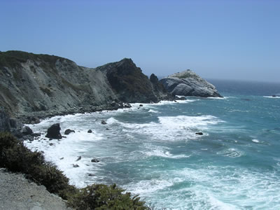

Our Story
A One-of-a-Kind Getaway
At Pacific Trails Resort, we believe a memorable escape should make it easy to feel connected to nature and comfortable at the same time. Our coastal setting invites our guests to trade their busy routines for the ocean air, quiet trails, and calm mornings. After a day outdoors, a private yurt offers a welcoming place to rest and recharge.
Comfort Shaped Around the Coast
Guests can choose their own pace, from hiking and kayaking to bird watching or relaxing at the resort. We bring together the simple pleasures of a retreat with the comforts that help a stay feel special. Whether you are planning an active weekend or a peaceful break, our team is glad to help you explore the yurts, activities, and packages.
At Pacific Trails, the best moments often come from having room to slow down and enjoy where you are.
A Few Views Along the Coast
Take a quick look at the shoreline, coves, and evening light around a coastal getaway.


